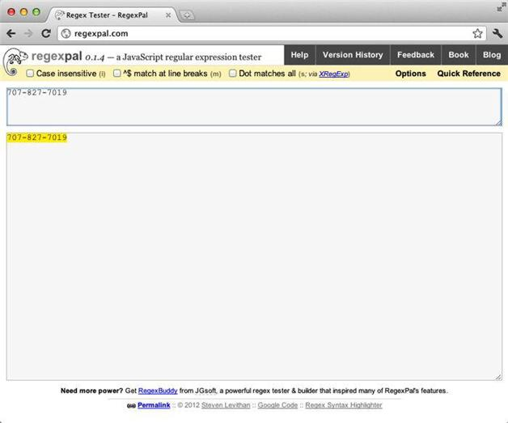

1.2 匹配北美电话号码
现在我们要写一个正则表达式匹配北美电话号码。在Regexpal的下方文本框中键入以下电话号码：
707-827-7019
知道这是哪里的电话号码吗？这是O'Reilly Media的电话号码。
接下来用正则表达式匹配这个号码。有很多方法都可以做到，但首先只要在上方的文本框键入这个号码本身，也就是与下方文本框的内容完全一致即可（先忍耐一下，别泄气）：
707-827-7019
这时，你应该看到下方文本框中的电话号码从头到尾都以黄色被高亮显示。如果你的结果也是这样（如图1-2所示），那么一切正常。

图1-2 Regexpal中高亮显示的十位电话号码
本书中提及的有关图片或者屏幕截图中的颜色，比如Regexpal中的黄色高亮效果，应该只能在线或者从本书的电子版中看到，而不会出现在纸质版本中。如果你在阅读本书的纸质版，我所提及的颜色在你看来将会是灰阶的，对此我非常抱歉。
刚刚你所写的正则表达式是用字符串字面值（string literal）来匹配目标字符串的。所谓字符串字面值，就是字面上看起来是什么就是什么。
现在将上方文本框的号码删除，然后只键入数字7。你看到什么了？现在只有数字7高亮显示。正则表达式中的字面值（数字）7与目标文本中数字7的四个实例匹配。